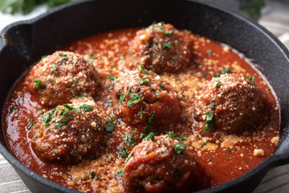

Meatballs
Description
Learn how to make meatballs with this recipe that is the best meatball recipe I have ever tried! I've used the combination of pork, beef, and veal but you can make them with just ground beef and they still taste great. Definitely use fresh bread crumbs and freshly grate your cheese instead of using the canned variety... It really does make a difference!
Ingredients
- 1 pound ground beef
- ½ pound ground veal
- ½ pound ground pork
- 1 cup freshly grated Romano cheese
- 2 eggs
- 2 cloves garlic, minced
- 1 ½ tablespoons chopped Italian flat leaf parsley
- salt and ground black pepper to taste
- 2 cups stale Italian bread, crumbled
- 1 ½ cups lukewarm water
- 1 cup olive oil
Instructions
- gather all ingredients together
- Combine beef, veal, and pork in a large bowl. Mix in cheese, eggs, garlic, parsley, salt, and pepper.
- Add bread crumbs and slowly mix in water, 1/2 cup at a time, until mixture is moist but still holds its shape (I usually use about 1 1/4 cups of water); shape into meatballs.
- Heat olive oil in a large skillet; add meatballs in batches and cook until browned on all sides, slightly crisp, and cooked through, about 10 to 15 minutes. Drain on paper towels.

Homepage